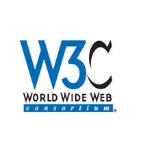

万维网联盟（摘自：百度百科）
官方logo

万维网（World Wide Web）是作为欧洲核子研究组织的一个项目发展起来的，在那里 Tim Berners-Lee 开发出万维网的雏形。Tim Berners-Lee- 万维网的发明人和万维网联盟的主任。
万维网联盟，又称W3C理事会。1994年10月在麻省理工学院计算机科学实验室成立。建立者是万维网的发明者蒂姆・伯纳斯・李。
万维网联盟是国际最著名的标准化组织。1994年成立后，至今已发布近百项相关万维网的标准，对万维网发展做出了杰出的贡献。万维网联盟拥有来自全世界40个国家的400多个会员组织，已在全世界16个地区设立了办事处。2006年4月28日，万维网联盟在中国内地设立首个办事处。
W3C 在 1994 年被创建的目的是，为了完成麻省理工学院（MIT）与欧洲粒子物理研究所（CERN）之间的协同工作，并得到了美国国防部高级研究计划局（DARPA）和欧洲委员会（European Commission）的支持。
W3C 致力于实现所有的用户都能够对 web 加以利用（不论其文化教育背景、能力、财力以及其身体残疾）。
W3C 同时与其他标准化组织协同工作，比如 Internet 工程工作小组（Internet Engineering Task Force）、无线应用协议（WAP）以及 Unicode 联盟（Unicode Consortium）。
W3C 由美国麻省理工学院计算机科学和人工智能实验室 (MIT CSAIL)，总部位于法国的欧洲信息数学研究联盟(ERCIM) 和日本的庆应大学（Keio University）联合运作，并且在世界范围内拥有分支办事处。
W3C 最重要的工作是发展 Web 规范（称为推荐，Recommendations），这些规范描述了 Web 的通信协议（比如 HTML 和 XHTML）和其他的构建模块。
每项 W3C 推荐的发展是通过由会员和受邀专家组成的工作组来完成的。工作组的经费来自公司和其他组织，并会创建一个工作草案，最后是一份提议推荐。一般来说，为了获得正式的批准，推荐都会被提交给 W3C 会员和主任。
万维网联盟由Web的发明者 Tim Berners-Lee及W3C的首席执行官 Jeffrey Jaffe领导，由设立在美国麻省理工大学（MIT）、欧洲数学与信息学研究联盟（ERCIM）、日本庆应大学（Keio University）和中国北京航空航天大学的四个全球总部（W3C Hosts）的全球团队联合运营。
除四个总部外，W3C还在全球20个国家和地区设立了办事处机构（W3C Offices），并拥有来自各国政府、行业、标准化组织、科研机构等近400家会员单位，覆盖了IT及互联网、出版、电视与媒体、汽车、金融、航空等众多领域。
W3C会员及来自各类机构的邀请专家参与到W3C的各类工作组（Groups）编写W3C的Web标准。此外，更为广泛的开发者社区也在标准开发过程中扮演重要角色。个人和团队都有多种方式参与到W3C的各类活动中。
从管理角度，W3C由四个签署联合协议的总部机构（Host Institutions）共同运营，包括MIT，ERCIM，Keio University及北京航空航天大学。
W3C团队的员工由W3C的Director和CEO直接领导。一个更小的管理团队(management team)负责日常运行。作为一个国际化的组织，W3C在不同地区设立了办事处机构（W3C Offices）。
从标准流程角度，W3C的标准流程（Process Document）、会员协议（Member Agreement）及专利策略（Patent Policy）约定了W3C参与各方的职责和利益。其中，W3C的一些主要机构包括顾问委员会（Advisory Committee）、Advisory Board、技术架构组（Technical Architecture Group, TAG）及各个工作组（chartered groups）。